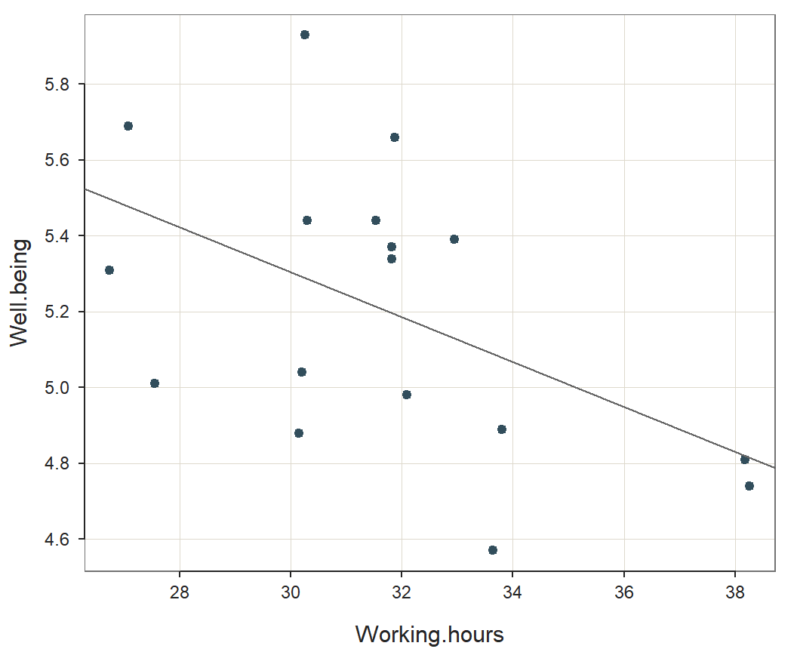
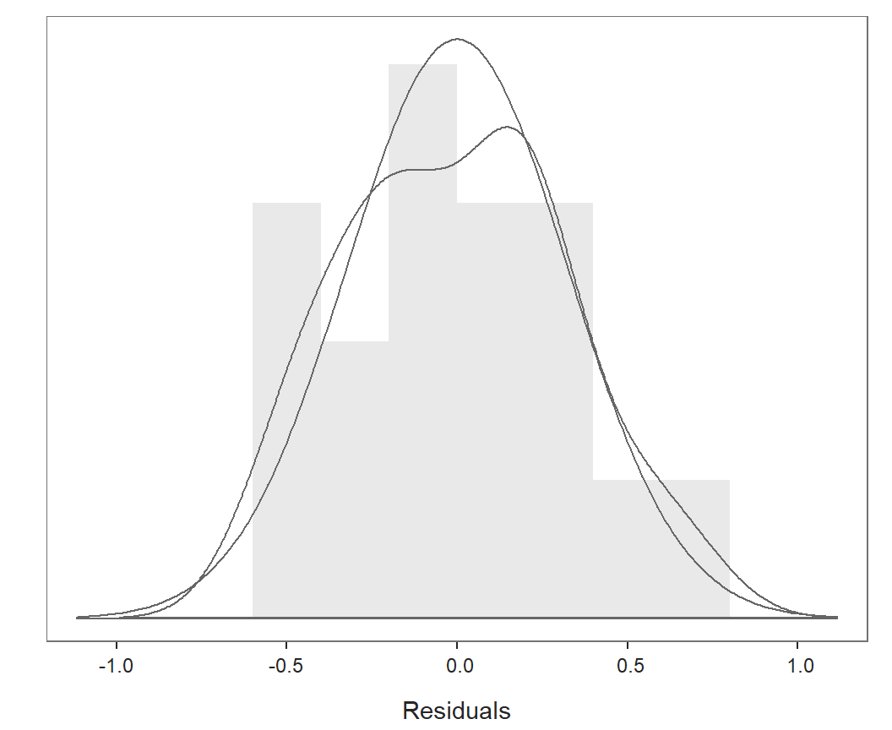

Sun Dec 19, 2021 at 12:11 with lessR version 4.1.4
Output Options: explain=TRUE, interpret=TRUE, results=TRUE, document=TRUE, code=TRUE
The variable of primary interest is the response variable, Well.being. The purpose of this analysis is to account for the values of Well.being in terms of the values of the predictor variable Working.hours.
Read the data with the lessR function Read. The corresponding data values for the variables in the model comprise the training data, from which the model is estimated.
d <- Read(from = "./data/wellbeing.xlsx")## [with the read.xlsx function from Schauberger and Walker's openxlsx package]
##
## >>> Suggestions
## To read a csv or Excel file of variable labels, var_labels=TRUE
## Each row of the file: Variable Name, Variable Label
## Details about your data, Enter: details() for d, or details(name)
##
## Data Types
## ------------------------------------------------------------
## character: Non-numeric data values
## double: Numeric data values with decimal digits
## ------------------------------------------------------------
##
## Variable Missing Unique
## Name Type Values Values Values First and last values
## ------------------------------------------------------------------------------------------
## 1 Country character 22 0 22 Austria ... United Kingdom
## 2 Well.being double 22 0 21 5.37 5.04 4.59 ... 5.66 4.39 4.98
## 3 GDP double 22 0 22 26171.6909118266 ... 28913.0962918089
## 4 Equality double 21 1 21 70.85 67.03 ... 71.77375 64.03
## 5 Food.consumption double 22 0 22 3760.36 3674.95 ... 3251.21 3437.22
## 6 Alcohol.consumption double 22 0 21 13.24 10.77 12.44 ... 11.06 15.6 13.37
## 7 Energy.consumption double 22 0 22 2076.20046430559 ... 1921.65630197802
## 8 Family double 22 0 21 1.4054 1.76 1.39 ... 1.43 1.3 1.77
## 9 Working.hours double 17 5 17 31.8173076923077 ... 32.0903836763822
## 10 Work.income double 16 6 16 30.4599990844727 ... 27.1000003814697
## 11 Health.spending double 22 0 22 15.74170456 ... 15.58877599
## 12 Military.spending double 22 0 22 0.812633138406514 ... 2.35142785961432
## ------------------------------------------------------------------------------------------Data from the following variables are available for analysis: Country, Well.being, GDP, Equality, Food.consumption, Alcohol.consumption, Energy.consumption, Family, Working.hours, Work.income, Health.spending and Military.spending.
Express Well.being as a linear function of one predictor variable: Working.hours. Within the context of the model, indicate the response variable with a Y, subscripted by the variable name, \(Y_{Well.being}\). Write each predictor variable as a subscript to an X. From the training data compute \(\hat Y_{Well.being}\), the fitted value of the response variable from the model for a specific set of values for Working.hours. \[\hat Y_{Well.being} = b_0 + b_1 X_{Working.hours}\] The intercept, \(b_0\), indicates the fitted value of Well.being, for values of Working.hours all equal to zero. The slope coefficient, \(b_1\) , is the average change in the value of response variable, Well.being, for a one-unit increase in the value of the corresponding predictor variable. The values of these estimated coefficients only apply to the interpretation of the training data from which they were estimated.
To compute \(\hat Y_{Well.being}\) from a specific set of values for Working.hours requires the estimated values of the coefficients of the model, the values of each regression coefficient, \(b_j\). This estimation procedure depends on the residual, the difference between the actual value of Well.being for each row of data and the corresponding value fitted by the model. Define the residual as a variable across all rows of data. Use the subscript i to indicate the \(i^{th}\) row of data to emphasize that the expression applies to each row of training data. The name of the response variable in this notation is understood and so is omitted for simplicity. \[e_i = Y_i - \hat Y_i\] Estimate the coefficients with ordinary least squares (OLS), which provides the one set of estimates that minimize the sum of the squared residuals, \(\sum e^2_i\), across all the rows of the training data.
Accomplish the estimation and related computations with the lessR function Regression, abbreviated as reg. Keep graphics separate, so generate these later.
r <- Regression(my_formula = Well.being ~ Working.hours, digits_d = 2, graphics = FALSE)The output begins with a specification of the variables in the model and a brief description of the data.
r$out_background## Data Frame: d
##
## Response Variable: Well.being
## Predictor Variable: Working.hours
##
## Number of cases (rows) of data: 22
## Number of cases retained for analysis: 17Of the 22 cases presented for analysis, 17 are retained, so the number of deleted cases due to missing data is 5.
The analysis of the model begins with the estimation of each sample regression coefficient, \(b_j\), from the training data. Of greater interest is each corresponding population value, \(\beta_j\), in the population model. \[\hat Y_{Well.being} = \beta_0 + \beta_1 X_{Working.hours}\] The associated inferential analyses for each estimate are the hypothesis test and confidence interval. Each t-test evaluates the null hypothesis that the corresponding individual population regression coefficient is 0, here for the \(j^{th}\) coefficient. \[H_0: \beta_j=0\] \[H_1: \beta_j \ne 0\] The confidence interval provides the range of likely values of the corresponding \(\beta_j\). Each 95% confidence interval is the margin of error on either side of the corresponding estimated intercept or slope coefficient, \(b_j\).
r$out_estimates## Estimate Std Err t-value p-value Lower 95% Upper 95%
## (Intercept) 7.08 0.83 8.571 0.000 5.32 8.84
## Working.hours -0.06 0.03 -2.279 0.038 -0.11 -0.00This estimated model is the linear function with estimated numeric coefficients that yield a fitted value of Well.being from the provided data value of Working.hours. \[\hat Y_{Well.being} = 7.08 - 0.06 X_{Working.hours}\]
This predictor variable has a p-value less than or equal to \(\alpha\) = 0.05: Working.hours.
To extend the results beyond this sample to the population from which the sample was obtained, interpret the meaning of this corresponding coefficient in terms of its confidence interval. With 95% confidence, for each additional unit of Working.hours, on average, Well.being changes somewhere between -0.11 to -0.00.
An estimated model is not necessarily useful. A first consideration of usefulness is that the model fits the data from which it is estimated, the training data. To what extent do the values fitted by the model, \(\hat Y_{Well.being}\), match the corresponding training data values \(Y_{Well.being}\)? Are the individual residuals, \(e_i\), typically close to their mean of zero, or are they scattered about the regression line with relatively large positive values and negative values? There are more considerations of usefulness, but a model that cannot fit its own training data is generally not useful.
The analysis of fit depends on the adequacy of the model to account for the variability of the data values of Well.being, expressed in model notation as \(Y_{Well.being}\). The core component of variability is the sum of squares, short for the sum of some type of squared deviations. The total variability of \(Y_{Well.being}\) depends on the deviations of its data values from its mean, \(Y_{Well.being} - \bar Y_{Well.being}\), and then the resulting sums of squares, \(SS_{Well.being}\).
The analysis of the residuals, \(e = Y_{Well.being} - \hat Y_{Well.being}\), follows from the corresponding sum of squares, the value minimized by the least squares estimation procedure, \(\sum e^2_i\) = \(SS_{Residual}\). This residual sum of squares represents variation of \(Y_{Well.being}\) not accounted for by \(\hat Y_{Well.being}\). The complement to the residual sum of squares is the Model (or Regression) sum of squares, the deviations of the fitted values about the mean, \(\hat Y_{Well.being} - \bar Y_{Well.being}\).
The analysis of variance (ANOVA) partitions this total sum of squares into the residual variability, \(\sum e^2_i\), and the Model sum of squares, \(SS_{Model}\). The ANOVA table displays these various sources of variation.
r$out_anova## df Sum Sq Mean Sq F-value p-value
## Model 1 0.58 0.58 5.20 0.038
## Residuals 15 1.68 0.11
## Well.being 16 2.27 0.14\[SS_{Well.being} = SS_{Model} + SS_{Residual} = 0.58 + 1.68 = 2.27 \]
This decomposition of the sums of squares of Well.being into what is explained by the model, and what is not explained, is fundamental to assessing the fit of the model.
From the ANOVA two types of primary indicators of fit are derived: standard deviation of the residuals and several \(R^2\) statistics.
r$out_fit## Standard deviation of Well.being: 0.40
##
## Standard deviation of residuals: 0.33 for 15 degrees of freedom
## 95% range of residual variation: 1.43 = 2 * (2.131 * 0.33)
##
## R-squared: 0.257 Adjusted R-squared: 0.208 PRESS R-squared: 0.102
##
## Null hypothesis of all 0 population slope coefficients:
## F-statistic: 5.195 df: 1 and 15 p-value: 0.038The standard deviation of the residuals, \(s_e\), directly assesses the variability of the data values of Well.being about the corresponding fitted values for the training data, the particular data set from which the model was estimated. Each mean square in the ANOVA table is a variance, a sum of squares divided by the corresponding degrees of freedom, df. By definition, the standard deviation, \(s_e\) is the square root of the mean square of the residuals. \[s_e = \sqrt{MS_{Residual}} = \sqrt{0.11} = 0.33\] To interpret \(s_e\) = 0.33, consider the estimated range of 95% of the values of a normally distributed variable, which depends on the corresponding 2.5% cutoff from the \(t\)-distribution for df=15: 2.131. \[95\% \; Range: 2 * t_{cutoff} * s_e = 2 * 2.131 * 0.33 = 1.43\]
This range of the residuals for the fitted values is the lower limit of the range of prediction error presented later.
A second type of fit index is \(R^2\), the proportion of the overall variability of response variable Well.being that is accounted for by the model, applied to the training data, expressed either in terms of \(SS_{Residual}\) or \(SS_{Model}\). \[R^2 = 1 - \frac{SS_{Residual}}{SS_{Well.being}} = \frac{SS_{Model}}{SS_{Well.being}} = \frac{0.58} {2.27} = 0.257 \] Unfortunately when any new predictor variable is added to a model, useful or not, \(R^2\) necessarily increases. Use the adjusted version, \(R^2_{adj}\), to more appropriately compare models estimated from the same training data with different numbers of predictors. \(R^2_{adj}\) helps to avoid overfitting a model because it only increases if a new predictor variable added to the model improves the fit more than would be expected by chance. The adjustment considers the number of predictor variables relative to the number of rows of data (cases). Accomplish this adjustment with the degrees of freedom, to transform each Sum of Squares to the corresponding Mean Squares_ \[R^2_{adj} = 1 - \frac{SS_{Residual} \; / \; 15} {SS_{Well.being} \; / \; 16} = 1 - \frac{MS_{Residual}}{MS_{Well.being}} = 1 - \frac{0.11} {0.14} = 0.208\] From this analysis compare \(R^2\) = 0.257 to the adjusted value of \(R^2_{adj}\) = 0.208, a difference of 0.050. A large difference indicates that too many predictor variables in the model for the available data yielded an overfitted model.
Both \(R^2\) and \(R^2_{adj}\) describe the fit of the model to the training data. To generalize to prediction accuracy on new data, evaluate the fit of the model to predict using the predictive residual (PRE). To calculate the predictive residual for a row of data (case), first estimate the model with that case deleted, that is, from all the remaining cases in the training data, an example of a case-deletion statistic. Repeat for all rows of data. \(SS_{PRE}\), or PRESS, is the sum of squares of all the predictive residuals in a data set. From \(SS_{PRE}\) define the predictive \(R^2\), \(R^2_{PRESS}\). \[R^2_{PRESS} = 1 - \frac{SS_{PRE}}{SS_{Well.being}} = 1 - \frac{2.03} {2.27} = 0.102 \]
Because an estimated model at least to some extent overfits the training data, \(R^2_{PRESS}\) = 0.102 is lower than both \(R^2\) and \(R^2_{adj}\). The value is lower, but is the more appropriate value to understand how well the model predicts new values beyond the training from which it was estimated.
Compare two nested models with the lessR function Nest. Specify the response variable Well.being, the variables in the reduced model, and then the additional variables in the full model. Nest also ensures to compare the same data values when there is missing data that might otherwise leave more data in the analysis of the reduced model.
How do the variables in the model relate to each other? The correlation of response variable Well.being with predictor variable Working.hours should be high. The correlation of Well.being with Working.hours in the training data is \(r\) = -0.507.
Visually summarize the relationship of Well.being and Working.hours in the model with the scatterplot. Plot the scatter plot separately with the lessR function regPlot. Specify option 1 to indicate this specific plot.
regPlot(r, 1, pred.intervals=FALSE) # 1: scatter plot 
Values of Well.being fitted by the estimated model do not generally equal the corresponding data values_ Which cases (rows of data) contribute the most to this lack of fit? The identification of cases that have a large residual and/or undue influence on the estimation of the model helps detect potential outliers. For each case, in addition to the data values, fitted value and corresponding residual, the analysis provides the following values:
r$out_residuals## Data, Fitted, Residual, Studentized Residual, Dffits, Cook's Distance
## [sorted by Cook's Distance]
## [res_rows = 17, out of 17 ]
## --------------------------------------------------------------
## Working.hours Well.being fitted resid rstdnt dffits cooks
## 9 27.55 5.01 5.45 -0.44 -1.49 -0.65 0.20
## 5 30.27 5.93 5.29 0.64 2.24 0.62 0.15
## 16 33.63 4.57 5.09 -0.52 -1.72 -0.51 0.12
## 20 31.87 5.66 5.19 0.47 1.50 0.37 0.06
## 8 30.16 4.88 5.29 -0.41 -1.32 -0.37 0.06
## 13 27.08 5.69 5.48 0.21 0.69 0.33 0.06
## 12 26.75 5.31 5.50 -0.19 -0.61 -0.31 0.05
## 7 32.95 5.39 5.13 0.26 0.80 0.22 0.02
## 2 30.21 5.04 5.29 -0.25 -0.77 -0.21 0.02
## 10 38.25 4.74 4.82 -0.08 -0.26 -0.18 0.02
## 15 33.81 4.89 5.08 -0.19 -0.58 -0.18 0.02
## 11 31.54 5.44 5.21 0.23 0.69 0.17 0.02
## 22 32.09 4.98 5.18 -0.20 -0.60 -0.15 0.01
## 1 31.82 5.37 5.20 0.17 0.52 0.13 0.01
## 19 30.30 5.44 5.29 0.15 0.46 0.13 0.01
## 18 31.82 5.34 5.20 0.14 0.43 0.11 0.01
## 14 38.17 4.81 4.82 -0.01 -0.04 -0.02 0.00From this analysis the five largest Cook’s distances: 0.20, 0.15, 0.12, 0.06 and 0.06.
An informal criterion for evaluating the size of Cook’s distance is a cutoff value of 1 to indicate too large of a large size. No cases have a Cook’s distance larger than 1 in this analysis.
Ultimately the analysis moves beyond the training sample. Prediction is from new data values of Working.hours, what may be called the prediction sample. Applying these new data values to the estimated model yields the predicted values. For data values from the training sample, the fitted value and predicted value are the same, calculated from the same estimated model, but are different concepts with different interpretations.
Unfortunately, prediction is not perfect. The range of values likely to contain the actual data value for Well.being predicted from specific values of Working.hours quantifies the prediction error. The standard deviation of the residuals, \(s_e\), assumed to be the same for all sets of values of the predictor variables, specifies the modeling error of the fitted values from the training data, error due to imperfections in the model. However, for predictions of future values of Well.being, new data are collected. So sampling error of a value on the regression line, indicated with \(s_{\hat Y}\), must also be considered in the assessment of prediction error. Consideration of both sources of error results in the _standard error of prediction (or forecast)
\[s_f = \sqrt{s^2_e + s^2_{\hat Y}}\]
Unlike modeling error, the amount of sampling error varies depending on the values of the predictor variables, so each row of data has its own value, \(s_f\). Each prediction interval is the margin of error, the t-cutoff multiplied by the corresponding \(s_f\), added and subtracted on either side of \(\hat Y_{Well.being}\).
The analysis provides each row of data values, as if they were new data, with a predicted value based on the model estimated from the training data, as well as the standard error of prediction. From these values obtain the lower and upper bounds of the corresponding 95% prediction interval. By default, only the first three, middle three and last three rows of data are presented, sufficient to indicate the ranges of prediction error encountered throughout the ranges of data values
r$out_predict## Working.hours Well.being pred sf pi.lwr pi.upr width
## 10 38.25 4.74 4.82 0.38 4.00 5.64 1.64
## 14 38.17 4.81 4.82 0.38 4.00 5.64 1.64
## 15 33.81 4.89 5.08 0.35 4.33 5.82 1.49
## 16 33.63 4.57 5.09 0.35 4.35 5.83 1.49
## 7 32.95 5.39 5.13 0.35 4.39 5.87 1.48
## 22 32.09 4.98 5.18 0.34 4.45 5.91 1.47
## 20 31.87 5.66 5.19 0.34 4.46 5.93 1.47
## 18 31.82 5.34 5.20 0.34 4.46 5.93 1.47
## 1 31.82 5.37 5.20 0.34 4.46 5.93 1.47
## 11 31.54 5.44 5.21 0.34 4.48 5.95 1.47
## 19 30.30 5.44 5.29 0.35 4.55 6.02 1.48
## 5 30.27 5.93 5.29 0.35 4.55 6.03 1.48
## 2 30.21 5.04 5.29 0.35 4.55 6.03 1.48
## 8 30.16 4.88 5.29 0.35 4.56 6.03 1.48
## 9 27.55 5.01 5.45 0.36 4.68 6.22 1.54
## 13 27.08 5.69 5.48 0.36 4.70 6.25 1.55
## 12 26.75 5.31 5.50 0.37 4.71 6.28 1.57The size of the prediction intervals for the range of data found in the input data table vary from a minimum of 1.47 for Row 11 to a maximum of 1.64 for Row 10.
The confidence intervals for the points on the regression line, and the much larger prediction intervals for the individual data points, are illustrated with an enhancement of the original scatter plot. Plot the scatter plot with prediction intervals separately with the lessR function regPlot. Specify option 1 to indicate this specific plot.
regPlot(r, 1) # 1: scatter plot with prediction intervalsNew data values from which to obtain a prediction, different from the training data, can be entered with the options X1_new, X2_new, up to X6_new, where each option name refers to the position of the corresponding predictor variable in the specification of the regression model. Any number of values can be specified for each predictor variable. Suppose, for example, that there are two values of interest for the predictor variable from which to make a prediction, listed below.
Working.hours: 30, 33
Re-run the analysis to obtain the prediction intervals with these specified values_
r <- Regression(my_formula = Well.being ~ Working.hours, digits_d = 2,
X1_new=c(30,33),
graphics = FALSE)Calculate the piction intervals only for the new data values_
r$out_predict## ----------------------------------------------------------
## Working.hours Well.being pred sf pi.lwr pi.upr width
## 2 33.00 5.13 0.35 4.39 5.86 1.48
## 1 30.00 5.30 0.35 4.56 6.04 1.48The size of the prediction intervals for the range of data found in the newly specified values vary from a minimum of 1.48 for Row 2 to a maximum of 1.48 for Row 1. The rows in the output display, however, are re-ordered according to the combinations of the ordered values of the predictor variables.
The residuals should be independent, normal random variables with a mean of zero and constant variance.
For the inferential analyses to be valid, the residuals should be normally distributed. Violation of normality does not bias the estimates, but it does render the inferential tests invalid. Plot the distribution of residuals separately with the lessR function regPlot. Specify option 2 to indicate this specific plot.
regPlot(r, 2) # 2: distribution of residuals
The residuals should represent random variation, free of any pattern or structure. They should satisfy the homoscedasticity assumption, randomly scattered about 0, with approximately the same level of variability across the range of the fitted values within a horizontal band around the zero-line. Otherwise they demonstrate heteroskedasticity. Plot the scatter plot of fitted values with residuals separately with the lessR function regPlot. Specify option 3 to indicate this specific plot.
regPlot(r, 3) # 3: scatter plot of fitted with residuals